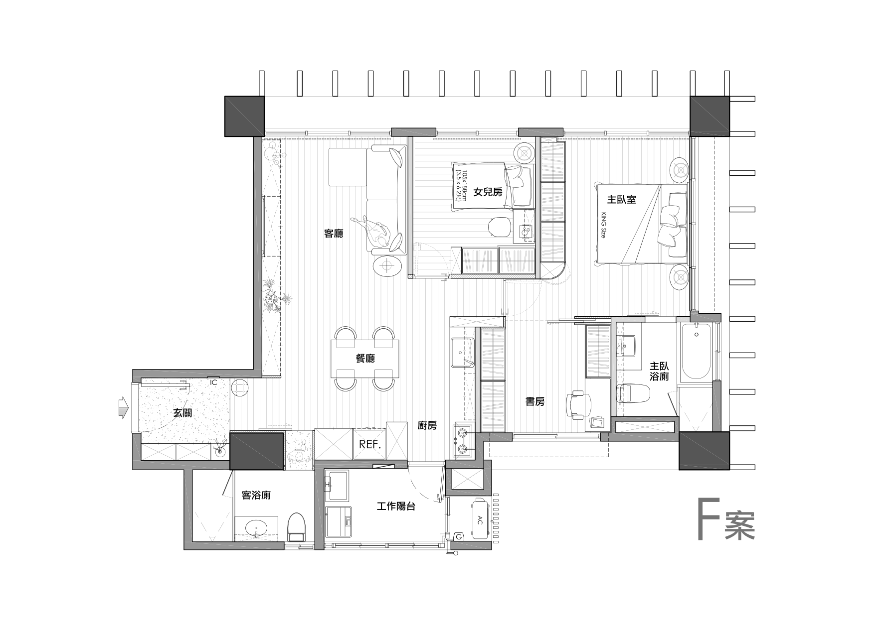

A quiet home. A new perspective.Step inside and make yourself at home.
Opening your new perspective…

Layout and furniture positions traced from the supplied drawing. Scale estimated from the 105 × 188 cm bed. Ceiling height assumed at 2.8 m; finishes and lighting are an interpretation. Unclear door openings are approximated.
The supplied plan defines the layout. Materials, heights, and unmarked dimensions are interpreted, not construction measurements.